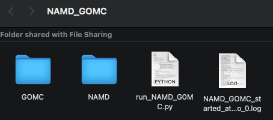
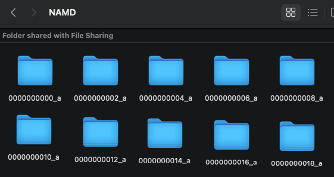
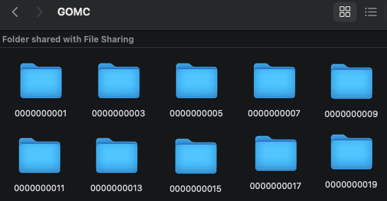

Simulation Output¶
The hybrid NAMD_GOMC Python code generates a few data outputs, which include:
A log file for each simulation start/restart. Additionally, one (1) NAMD and one (1) GOMC simulation folder and their output files per cycle, regardless of the number of restarts. Please also see the image below.
A “NAMD” folder consists of sub-folders containing individual NAMD simulation with it’s output files (i.e., 1/2 of a cycle). Each iteration folder is listed in numerical order with the ending of either “_a” or “_b”, where “_a” is box 0 and “_b” is box 1 of the previous GOMC simulation (see image below, which shows NAMD simulating only box 0). These individual NAMD simulation are always even numbered to keep a trackable order between the simulation engines. Note: box 1 is only applicable to the GEMC ensemble, if the user selects NAMD to run box 1.
A “GOMC” folder consists of sub-folders containing individual GOMC simulation with it’s output files (i.e., 1/2 of a cycle). These individual GOMC simulation are always odd numbered to keep a trackable order between the simulation engines (see image below). Note: box 1 is only applicable to the GCMC or GEMC ensembles, in which case, box 0 and box 1 are always contained in the same folder.

The hybrid simulation Python code outputs the main NAMD and GOMC folders, each containing 100s to 10,000s of individual simulations and associated files, which are utilized in the post-simulation analysis by combining all the files in the individual runs. These individual folders contain PSF, PDB, DCD, System Energies, and other system State properties, to name a few.
At a minimum, the last completed individual GOMC run is required to restart the simulation; therefore, the user should always keep this file for continuing the simulation from its previous ending point. However, the simulation step numbers are properly calculated/arranged during the post-simulation analysis, and the user may need to correct for this if all the individual simulations are not kept for the final post-simulation analysis.
Retaining all the individual simulation runs can add up to considerable storage requirements. Therefore, we recommended optimizing the number of steps and moves for each simulation engine and calculating the entire run’s storage requirements before starting the production runs. In the future, we plan on programming an auto-cleanup and that will combine all the individual runs on the fly and minimize the storage requirement.